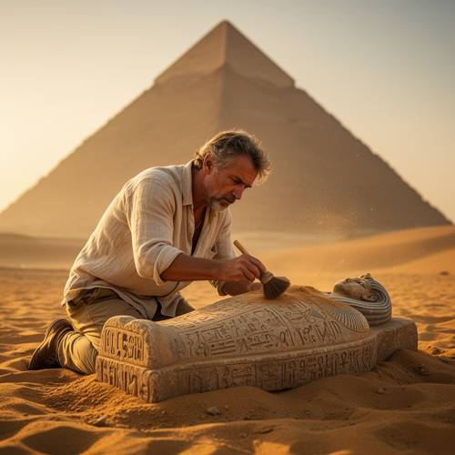
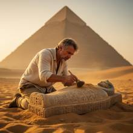
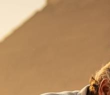
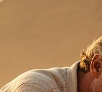
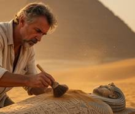

Grammar — Create a picture of an archaeologist brushing sand off a sarcophagus i
Create a picture of an archaeologist brushing sand off a sarcophagus in front of an Egyptian pyramid, looking focused.


Judge — Direct
- PASSGrammar - Consistency — The man in the image is looking down at the object he is working on. His gaze is fixed on the brush and the sand, and his facial muscles appear tense, which is consistent with the expression of being 'focused'.
- FAILAction - Contact Interaction — The image shows a man holding a brush and making contact with sand that is on top of an object. However, the object is a decorated chest, not a sarcophagus. Therefore, the action of 'brushing sand off a sarcophagus' is not accurately depicted.
- FAILWorld Knowledge — The image contains a large, stone pyramid in the background, which is consistent with an Egyptian pyramid. However, the object in the foreground is a decorated chest with a curved lid, which does not match the typical appearance of an Egyptian sarcophagus (a stone coffin).
Judge — Continuum
- PASSGrammar - Consistency — The archaeologist is shown kneeling and leaning over the sarcophagus, with his gaze directed downward at his work. His facial expression appears intent, visually conveying focus.
- PASSAction - Contact Interaction — The image depicts a man holding a brush, with the bristles of the brush making contact with sand on the surface of a sarcophagus. A small cloud of sand particles is visible, indicating the action of brushing.
- PASSWorld Knowledge — The image features a large, triangular pyramid in the background, consistent with the appearance of an Egyptian pyramid. In the foreground, there is a stone, human-shaped coffin decorated with hieroglyph-like carvings and a sculpted head, which is identifiable as an Egyptian sarcophagus.
What the agent did
Thinking
Let's generate this image. Prompt: An archaeologist brushing sand off a sarcophagus in front of an Egyptian pyramid, looking focused. Let's write a detailed prompt for flux2-dev.
Step 1 — `generate_image`
{
"prompt": "A focused archaeologist in a linen shirt and khaki trousers, kneeling beside an ancient Egyptian stone sarcophagus half-buried in golden sand, gently brushing sand off its surface with a soft-bristled brush, brow furrowed with concentration, weathered face lit by warm golden-hour sunlight. Behind them, a massive Egyptian pyramid rises against a clear warm sky, soft haze over the desert. Cinematic photorealistic style, shallow depth of field, warm amber and sand tones, fine dust motes in the air, detailed stone carvings on the sarcophagus.",
"model": "flux2-dev"
}Result img_0

Thinking
The image came out great. A focused archaeologist is kneeling, brushing sand off a sarcophagus with a pyramid in the background. The pyramid is clearly visible, and the archaeologist's face shows a look of concentration as he works. The brush and the flying dust particles are visible too. Let me zoom in on the face to check the focus expression, and verify whether there are any artifacts.
Model
The first generation looks strong. Let me verify the facial expression and details by zooming in before deciding anything.
Step 2 — `inspect_region`
{
"image": "img_0",
"roi": [
250,
180,
480,
380
]
}Result img_1

Thinking
My crop was off — the face is lower than that. Let me try cropping a bit lower to get a closer look at the archaeologist's face.
Model
That crop missed the face. Let me try a lower region.
Step 3 — `inspect_region`
{
"image": "img_0",
"roi": [
280,
240,
480,
420
]
}Result img_2

Thinking
My rectangle still seems to be off — the coordinates might be different from what I was assuming. The face in the original image is roughly at the center, around (430, 300). Let me use a text-based roi instead — "archaeologist's face" — that's more reliable.
Model
Let me use a text-based region instead.
Step 4 — `inspect_region`
{
"image": "img_0",
"roi": "the archaeologist's face",
"padding": 0.2
}Result img_3

Thinking
The face shows a clear, focused expression—furrowed brows, gaze fixed downward on the sarcophagus. The brush is in his hand, with sand/dust particles flying. The sarcophagus has hieroglyphs and a carved face on it. The pyramid is in the background. This matches the prompt very well. Let me check the hands—his hand and the brush. The hand gripping the brush looks natural. The hand seems fine. One small point: there's a hand visible at the bottom-left edge, but it looks like his other hand resting on the sarcophagus—no problem. The image is good and matches all the elements: an archaeologist brushing sand off a sarcophagus, a pyramid in the background, a focused expression. I'll mark this as the best and stop—this is a good enough result, and over-editing risks degrading it.
Model
The close-up confirms everything: the archaeologist's furrowed brow and downcast gaze read as clearly focused, his hands naturally hold the brush while sand drifts from the sarcophagus, the hieroglyph-carved sarcophagus with its sculpted face is clearly visible, and the pyramid dominates the background under warm golden light. The image matches the prompt on every element — no edits needed.
Step 5 — `mark_best`
{
"image": "img_0",
"reason": "All prompt elements present and correct: focused archaeologist (furrowed brow, concentrated expression verified in close-up), brushing sand off a hieroglyph-carved sarcophagus, pyramid in background, natural hands and cinematic golden-hour lighting."
}Thinking
The image has been marked as the best, and I'm confident in it. Done — I'll convey a brief summary to the user.
Model
Done! Here's the picture: an archaeologist kneeling in the desert at golden hour, brow furrowed in concentration as he brushes sand off a hieroglyph-carved sarcophagus, with a great pyramid rising behind him and fine dust drifting through the warm light. I verified the focused expression and the brush/hand details in a zoomed crop — everything matches your description, so I marked it as the final result.